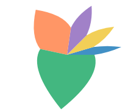
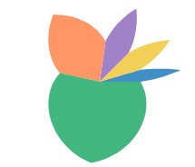

B. Polygon with a box and a curved outline

petal

Lake F at R = 90 px; its green slot is 192°. Largest outline gap to today's, by slot angle, measured on the rendered SVG paths:
| outline | 16° | 29° | 37° | 86° | 192° |
|---|---|---|---|---|---|
| curved (B) | 0.15 | 0.26 | 0.30 | 1.62 | 4.56 |
| five points | 0.45 | 0.45 | 0.45 | 0.88 | 12.3 |
| nine points (best fixed set) | 1.52 | 2.55 | 3.16 | 5.23 | 4.92 |
Proposed, JS
// Two straight edges out from the center, then two quadratic curves to the
// tip. Their control points go through polar like the vertices do.
const PETAL = "M.5 0 L0 .5 Q.167 .75 .5 1 Q.833 .75 1 .5 Z";
const flower = chart({ coord: Coord.polar(), axes: false })
.flow(stack({ by: "species", dir: "x", h: 40 }))
.mark(polygon({ w: "count", d: PETAL, fill: "species" }));PETAL = "M.5 0 L0 .5 Q.167 .75 .5 1 Q.833 .75 1 .5 Z"
flower = (
chart(coord=Coord.polar(), axes=False)
.flow(stack(by="species", dir="x", h=40))
.mark(polygon(w="count", d=PETAL, fill="species"))
)const flower = chart({ coord: Coord.polar(), axes: false })
.flow(stack({ by: "species", dir: "x", h: 40 }))
.mark(petal({ w: "count", fill: "species" }));The five-point version (no curves)
const PETAL = [[0, 0], [0, 0.5], [0.5, 1], [1, 0.5], [1, 0]];
polygon({ w: "count", points: PETAL, fill: "species" });Under 1 px from today's up to about 110° slots, but the straight edges warp into spirals that keep the full slot angle until near the tip, so wide petals bulge. No fixed point set fixes this: today's control point sits a fixed pixel distance from the petal's axis, which no fixed angle reproduces. The best nine-point fit halves the worst gap and is worse everywhere else, with visible kinks.